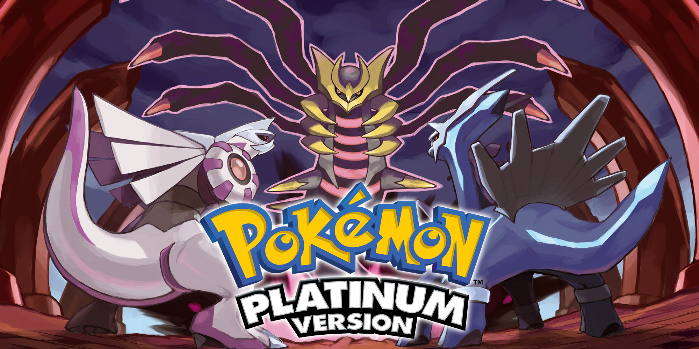
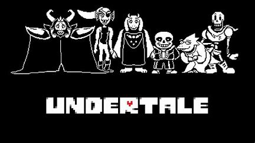
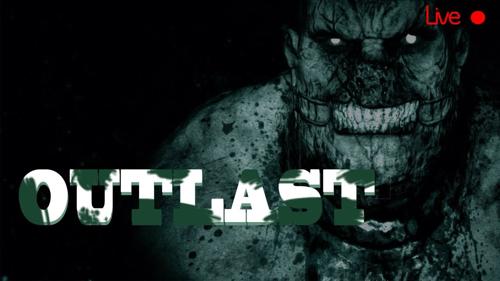
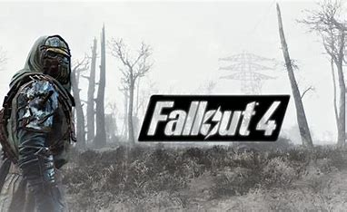

Home
pokemon platinum

pokemon platinum is de 4de generatie van de pokemon spelen
pokemon platinum is in 2008 uitgekomen. prefcies rond de tijden waarmee ik begon met gamen.
natuurlijk speelde ik het niet toen ik nog 3 was maar toen ik 5 werd kreeg ik voor het eerst de oude nintendo ds van mijn broer
daarop zat een disc met allemaal gecrackte games waarbij ook platinum zat.
ik kon niet bepaald engels dus ik deed maar wat maar ik vond het hellemaal geweldig
undertale

undertale is een rpg gemaakt in 2015 gemaakt door toby fox
de rede waarom dit een van mijn favoriete spelen is is omdat elke keuze die je maakt in het spel een ander einde geeft van het spel.
plus het heeft hele goeie muziek.
tijdens ik corona had had ik het spel gespeeld. ik was 3 weken ziek en zat ook 3 weken in mijn kamer
maar gelukkig had ik het spel. de characters en de storytelling zijn allemaal super uniek en hebben hun eigen normen en waarden.
outlast

outlast is een first person horror game gemaakt door red barrel.
het is een survival horror game gemaakt in 2013 het was de eerste horror game die ik ooit had gespeeld
het was ook het spel wat mij verliefd had gemaakt in de horror genre en vind het tot vandaag nog steeds een van de engste spellen die ik ooit heb gespeeld
en ik een ongezonde hoeveelheid horror spellen gespeeld.
fallout 4

fallout 4 is een spel gemaakt door bethesda gemaakt in 2015
het is een story based open world game. het gaat over nucleare wereld waar in de toekomst allemaal atoombomen zijn gevallen
waardoor een toekomste nucleare wereld is onstaan.
het verhaal gaat over een vader die voor de bomen zijn gevallen in een bunker is gegaan en bevroren word voor de toekomst.
uiteindelijk word die ontdooid en word wakker in een post apocolyptische wereld. het was het eerste spel waardoor ik echt beinvloed was.